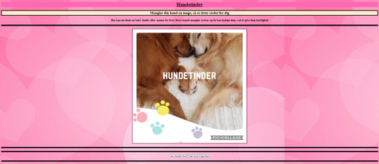
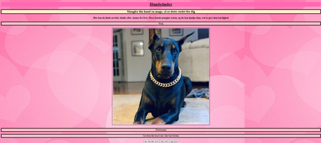

Hunde-Tinder: find love for your dog
Hvad er en database:
Database generalt: En database en et system som gør det nemmere at opbevarer store mængde af information, samtidlig gør en database at det bliver nemt og effektivt at opdatere og effektivisere informationen. En database kan indeholde ting såsom: en tabel over kunder, hvilken bil kunderne har og hvilken mærke den bil tilhøre.
Normalisering: Når man normaliser en database, organisere man den så der er en Unik primærnøgle, igen af de andre kolonner må afhænge af andet end primærnøgle, det samme data må kun forkomme et sted samt at alt daten skal kunnes realatere til hinanden
E/R Diagrammer: Dette er også kaldt Entity-Relationship-diagrammer. Dette forklare ralationerne der kan være i en database:
En-til-en
En-til-mange
Mange-til-mange
Vores database:
I min gruppe lavede vi en database for hunde dating, i vores database koblede vi et ID til et navn, race, lidt omkring hunden og et billede der til.
På vores hjemmeside er der dertil 2 knapper, en hvor man trykker ja
Denne hjemme side er bruger venlig da der kun er to knapper og vi valgte den lyserøde farve, da lyserød repræsentere kærlighed
Gennemgang af relevante kodestumper:
 I dette kodestykke starter vi med at hente dataen fra vores database som er det der hedder "Function generertext". Herfter sætter vi variablen i til 0 til at starte med og siger at i kan ikke være større end den datamængde vi har, men indtil da skal den bare lægge 1 til i for hver gang. Efterfølgende ses det at hvis i =x så henter den alt det data der passer til det ID ned altså variablene navn, race, lidtommig og billedet og dermed vises det på skærmen.
I dette kodestykke starter vi med at hente dataen fra vores database som er det der hedder "Function generertext". Herfter sætter vi variablen i til 0 til at starte med og siger at i kan ikke være større end den datamængde vi har, men indtil da skal den bare lægge 1 til i for hver gang. Efterfølgende ses det at hvis i =x så henter den alt det data der passer til det ID ned altså variablene navn, race, lidtommig og billedet og dermed vises det på skærmen.
Hundertinder:

